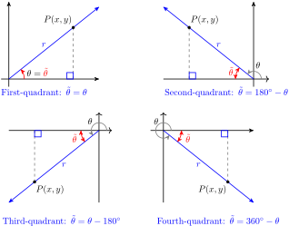
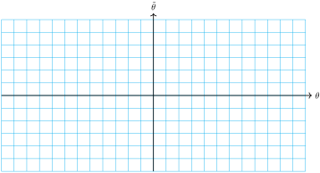
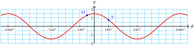
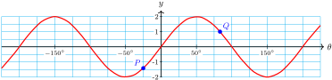
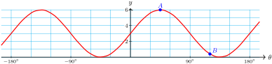
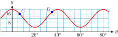

We can use angles to describe rotation. Positive angles indicate rotation in the counter-clockwise direction; negative angles describe clockwise rotation.
We define the trigonometric ratios of any angle by placing the angle in standard position and choosing a point on the terminal side, with \(r = \sqrt{x^2 + y^2}\text{.}\)
The Trigonometric Ratios.
If \(\theta\) is an angle in standard position, and \((x,y)\) is a point on its terminal side, with \(r = \sqrt{x^2 + y^2}\text{,}\) then
Draw a line from point \(P\) perpendicular to the \(x\)-axis.
The reference angle for \(\theta\) is the positive acute angle formed between the terminal side of \(\theta\) and the \(x\)-axis.

The trigonometric ratios of any angle are equal to the ratios of its reference angle, except for sign. The sign of the ratio is determined by the quadrant.
To find an angle \(\theta\) with a given reference angle \(\widetilde{\theta}\text{:}\).
There are always two angles between \(0\degree\) and \(360\degree\) (except for the quadrantal angles) with a given trigonometric ratio.
Coterminal angles have equal trigonometric ratios.
To solve an equation of the form \(\sin \theta = k\text{,}\) or \(\cos \theta = k\text{,}\) or \(\tan \theta = k\text{,}\) we can use the appropriate inverse trig key on a calculator to find one solution (or a coterminal angle.) We use reference angles to find a second solution between \(0\degree\) and \(360\degree\text{.}\)
Angles in a Unit Circle.
Let \(P\) be a point on a unit circle determined by the terminal side of an angle \(\theta\) in standard position. Then the coordinates \((x,y)\) of \(P\) are given by
\begin{equation*}
x = \cos \theta,~~~~~~y = \sin \theta
\end{equation*}
Coordinates.
If point \(P\) is located at a distance \(r\) from the origin in the direction specified by angle \(\theta\) in standard position, then the coordinates of \(P\) are
\begin{equation*}
x = r \cos \theta ~~~~ \text{and} ~~~~ y = r \sin \theta
\end{equation*}
Navigational directions for ships and planes are sometimes given as bearings, which are angles measured clockwise from north.
Periodic functions are used to model phenomena that exhibit cyclical behavior.
The trigonometric ratios \(\sin \theta\) and \(\cos \theta\) are functions of the angle \(\theta\text{.}\)
The period of the sine function is \(360\degree\text{.}\) Its midline is the horizontal line \(y = 0\text{,}\) and the amplitude of the sine function is 1.
The graph of the cosine function has the same period, midline, and amplitude as the graph of the sine function. However, the locations of the intercepts and of the maximum and minimum values are different.
We use the notation \(y = f(x)\) to indicate that \(y\) is a function of \(x\text{,}\) that is, \(x\) is the input variable and \(y\) is the output variable.
The tangent function has period \(180\degree\text{.}\) It is undefined at odd multiples of \(90\degree\text{,}\) and is increasing on each interval of its domain.
Angle of Inclination.
The angle of inclination of a line is the angle \(\alpha\) measured in the positive direction from the positive \(x\)-axis to the line. If the slope of the line is \(m\text{,}\) then
\begin{equation*}
\tan \alpha = m
\end{equation*}
where \(0\degree \le \alpha \le 180\degree\text{.}\)
Amplitude, Period, and Midline.
The graph of
\begin{equation*}
y = A\cos\theta ~~\text{or}~~ y = A\sin\theta
\end{equation*}
has amplitude \(\abs{A}\text{.}\)
The graph of
\begin{equation*}
y =\cos B\theta ~~\text{or}~~ y = \sin B\theta
\end{equation*}
has period \(\dfrac{360\degree}{\abs{B}}\text{.}\)
The graph of
\begin{equation*}
y = k + \cos\theta ~~\text{or}~~ y =k + \sin\theta
\end{equation*}
has midline \(y = k\text{.}\)
The graph of \(y = k + A\sin B\theta\) has amplitude \(A\text{,}\) period \(\dfrac{360\degree}{B}\text{,}\) and midline \(y = k\text{.}\) The same is true for the graph of \(y = k + A\cos B\theta\text{.}\)
Functions that have graphs shaped like sines or cosines are called sinusoidal.
Periodic Function.
The function \(y = f(x)\) is periodic if there is a smallest value of \(p\) such that
\begin{equation*}
f(x + p) = f(x)
\end{equation*}
for all \(x\text{.}\) The constant \(p\) is called the period of the function.
ExercisesChapter 4 Review Problems
1.
The London Eye, the world’s largest Ferris wheel, completes one revolution every 30 minutes. By how many degrees will it rotate in 1 minute?
2.
The London Eye in Problem 1 has 32 cabins evenly spaced along the wheel. If the cabins are numbered consecutively from 1 to 32, what is the angular separation between cabins number 1 and number 15?
Exercise Group.
For Problems 3–4,find two angles, one positive and one negative, that are coterminal with the given angle.
3.
\(\displaystyle 510\degree\)
\(\displaystyle 600\degree\)
\(\displaystyle -200\degree\)
\(\displaystyle -700\degree\)
4.
\(\displaystyle -380\degree\)
\(\displaystyle -423\degree\)
\(\displaystyle 187\degree\)
\(\displaystyle 1000\degree\)
Exercise Group.
For the angles in Problems 5–6, state the corresponding quadrant and reference angle. Give three other angles with the same reference angle, one for each of the other three quadrants. Sketch all four angles.
5.
\(\displaystyle -300\degree\)
\(\displaystyle -25\degree\)
\(\displaystyle 100\degree\)
\(\displaystyle 250\degree\)
6.
\(\displaystyle 430\degree\)
\(\displaystyle -590\degree\)
\(\displaystyle -95\degree\)
\(\displaystyle 1050\degree\)
7.
Let \(\widetilde{\theta} = f(\theta)\) be the function that gives the reference angle of \(\theta\text{.}\) For example, \(f(110\degree) = 70\degree\) because the reference angle for \(110\degree\) is \(70\degree\text{.}\)
Fill in the table of values.
\(\theta\)
\(0\degree\)
\(30\degree\)
\(60\degree\)
\(90\degree\)
\(120\degree\)
\(150\degree\)
\(180\degree\)
\(210\degree\)
\(240\degree\)
\(270\degree\)
\(300\degree\)
\(330\degree\)
\(360\degree\)
\(f(\theta)\)
\(\hphantom{000}\)
\(\hphantom{000}\)
\(\hphantom{000}\)
\(\hphantom{000}\)
\(\hphantom{000}\)
\(\hphantom{000}\)
\(\hphantom{000}\)
\(\hphantom{000}\)
\(\hphantom{000}\)
\(\hphantom{000}\)
\(\hphantom{000}\)
\(\hphantom{000}\)
\(\hphantom{000}\)
Choose appropriate scales for the axes and graph the function for \(-360\degree \le \theta \le 360\degree\text{.}\)

8.
Let \(\widetilde{\theta} = f(\theta)\) be the function that gives the reference angle of \(\theta\text{.}\) (See Problem 7.) Is \(f\) a periodic function? If so, give its period, midline, and amplitude. If not, explain why not.
Exercise Group.
For Problems 9–20, solve the equation exactly for \(0\degree \le \theta \le 360\degree\text{.}\)
9.
\(\sin \theta = \dfrac{-1}{2}\)
10.
\(\cos \theta = \dfrac{-1}{\sqrt{2}}\)
11.
\(2\cos \theta + 1 = 0\)
12.
\(5\sin \theta + 5 = 0\)
13.
\(\tan \theta - 1 = 0\)
14.
\(\sqrt{3} + 3\tan \theta = 0\)
15.
\(\cos \theta = \cos(-23\degree)\)
16.
\(\sin \theta = \sin(370\degree)\)
17.
\(\tan \theta = \tan 432\degree\)
18.
\(\tan \theta = \tan (-6\degree)\)
19.
\(\sin \theta + \sin 83\degree = 0\)
20.
\(\cos \theta + \cos 429\degree = 0\)
Exercise Group.
For Problems 21–26, solve the equation for \(0\degree \le \theta \le 360\degree\text{.}\) Round your answers to two decimal places.
21.
\(3\sin \theta + 2 = 0\)
22.
\(5\cos \theta + 4 = 0\)
23.
\(\dfrac{2}{3}\tan \theta + 1 = 0\)
24.
\(-4\tan \theta + 12 = 0\)
25.
\(4 = 8\cos \theta + 9\)
26.
\(-3 = 6\sin \theta -5\)
Exercise Group.
For Problems 27–32, find the coordinates of the point where the terminal side of angle \(\theta\) in standard position intersects the circle of radius \(r\) centered at the origin. Round your answers to two decimal places.
27.
\(\theta = 193\degree,~ r = 10\)
28.
\(\theta = -12\degree,~ r = 20\)
29.
\(\theta = 92\degree,~ r = 8\)
30.
\(\theta = 403\degree,~ r = 6\)
31.
\(\theta = -341\degree,~ r = 3\)
32.
\(\theta = -107\degree,~ r = 20\)
33.
If you follow a bearing of \(190\degree\) for 10 miles, how far south and how far west are you from your starting point? Round to two decimal places.
34.
A child releases a balloon, which then follows a bearing of \(84\degree\) for 150 meters. How far east and how far north is the balloon from where it was released? Round to the nearest meter.
Exercise Group.
For Problems 35–38, write the equation of a sine or cosine function with the given properties and sketch the graph, including at least one period.
35.
Amplitude 7, midline \(y = 4\text{,}\) period 2, \(y\)-intercept 4
36.
Amplitude 100, midline \(y = 50\text{,}\) period 12, \(y\)-intercept 100
37.
Maximum point at \((90\degree, 24)\) and minimum point at \((270\degree, 10)\)
38.
Horizontal intercept at \(180\degree\text{,}\) maximum points at \((0\degree, 5)\) and \((360\degree, 5)\)
Exercise Group.
For Problems 39–42, evaluate the expression for \(f(\theta) = \sin \theta\) and \(g(\theta) = \cos \theta\text{.}\)
39.
\(2f(\theta)g(\theta)\) for \(\theta = 30\degree\)
40.
\(f(\dfrac{\theta}{2})\) for \(\theta = 120\degree\)
41.
\(g(4\theta) - f(2\theta)\) for \(\theta = 15\degree\)
42.
\(\dfrac{1 - g(2\theta)}{2}\) for \(\theta = 45\degree\)
Exercise Group.
For Problems 43–46, write an equation for the given graph, and give the exact coordinates of the labeled points.
43.

44.

45.

46.

47.
Every 24 hours Delbert takes 50 mg of a therapeutic drug. The level of that drug in Delbert’s bloodstream immediately jumps to its peak level of 60 mg, but the level diminishes to its lowest level of 10 mg just before the next dose.
Sketch a graph of \(d(t)\text{,}\) the amount of the drug in Delbert’s bloodstream after one of his doses, Show at least three doses.
What is the period of \(d(t)\text{?}\)
48.
A water fountain has water trickling into a container, but once the container is full, it tilts and the water pours quickly out. Then the container tilts back and starts to fill again. The container is filled 5 times every minute.
Sketch a graph of \(h(t)\text{,}\) the height of water in the container at time Show at least two complete fill-and-empty cycles.
What is the period of \(h(t)\text{?}\)
49.
Henry is watching Billie ride a carousel. He stands 2 meters from the carousel, which has a diameter of 10 meters. He notices that she passes by him three times each minute.
Sketch a graph of \(f(t)\text{,}\) the distance between Henry and Billie at time \(t\text{.}\) Show at least two complete circuits.
What is the period of \(f(t)\text{?}\)
50.
An ant walks at constant unit speed (1 unit of distance per second) along the triangle with vertices at \((0,0),~(1,1),\) and \((0,1)\text{.}\)
How far does the ant need to walk to get from \((0,0)\) to \((1,1)\text{?}\) From \((1,1)\) to \((0,1)\text{?}\) From \((0,1)\) to \((0,0)\text{?}\)
Sketch a graph of \(g(t)\text{,}\) the ant’s \(y\)-coordinate at time \(t\text{.}\) Show at least two circuits around the triangle.
What is the period of \(g(t)\text{?}\)
Exercise Group.
For Problems 51–54,
Graph the function.
State the amplitude, period, and midline of the function.
51.
\(y = 4 + 2 \cos \theta\)
52.
\(y = -1 + 3 \cos \theta\)
53.
\(y = 1.5 + 3.5 \sin 2\theta\)
54.
\(y = 1.6 + 1.4 \sin (0.5\theta)\)
Exercise Group.
For Problems 55–58, find the angle of inclination of the line.
55.
\(y = \dfrac{\sqrt{3}}{3} x + 1\)
56.
\(y = - x - 11\)
57.
\(y = 100 - 28 x\)
58.
\(y = - 3.7 + 1.4x\)
Exercise Group.
For Problems 59–62, find an equation for the line passing through the given point with angle of inclination \(\alpha\text{.}\)
59.
\((0,2)\text{,}\)\(~ \alpha = 45\degree\)
60.
\((4,0)\text{,}\)\(~ \alpha = 135\degree\)
61.
\((3,-4)\text{,}\)\(~ \alpha = 120\degree\)
62.
\((-7,2)\text{,}\)\(~ \alpha = 60\degree\)
63.
Sketch the graphs of \(y = \tan \theta\) and \(y = \cos \theta\) on the same grid for \(-180\degree \lt \theta \lt 180\degree\text{.}\) How are the \(\theta\)-intercepts of the graph of \(y = \cos \theta\) related to the graph of \(y = \tan \theta\) ?
64.
Sketch the graphs of \(y = \tan \theta\) and \(y = \sin \theta\) on the same grid for \(-180\degree \lt \theta \lt 180\degree\text{.}\) How are the \(\theta\)-intercepts of the graph of \(y = \sin \theta\) related to the graph of \(y = \tan \theta\) ?